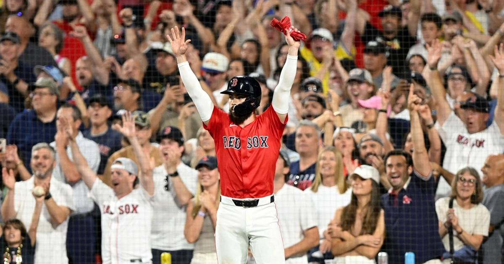

Red Sox non-tender Connor Wong, closing the book on the Mookie Betts trade
The Red Sox non-tendered catcher Connor Wong on Friday, making him a free agent — and ending Boston's last link to the Mookie Betts trade.

Disclosure: this post contains affiliate links. I earn a commission on qualifying purchases.
The move
The Boston Red Sox non-tendered catcher Connor Wong on Friday, making him a free agent. The decision was telegraphed earlier in the week: Boston designated Wong for assignment on Wednesday to clear a roster spot after acquiring catcher Nick Fortes from the Tampa Bay Rays, and no team claimed him or traded for him in the meantime.
Wong is now free to sign with any club. He figures to land a backup job somewhere — teams are always in the market for catching depth.
How it got here
The writing was on the wall well before this week. Wong hit .190 with no home runs in 2025, and while he improved to .233 in 2026, he never recaptured his 2024 form. His role shrank further after Boston acquired Adley Rutschman from the Orioles before the 2026 trade deadline, and the Fortes trade — Fortes for 17-year-old right-hander Angel Roa — gave the Sox a new backup catcher with better defensive metrics and a lower strikeout rate.
The money played a part too. MLB Trade Rumors projected Wong for a roughly $2 million salary in arbitration for 2027, and Boston had a cheaper, optionable alternative already on the roster in Mickey Gasper. Rather than tender Wong and stash him in Triple-A, the Sox moved on.
Wong in Boston
Wong appeared in 425 games for the Red Sox across six seasons, hitting .243/.304/.372 with 27 home runs, 128 RBI and 158 runs scored in 1,386 plate appearances. His 2026 line was .233/.308/.348 with four home runs, 25 RBI and three steals in 238 plate appearances over 77 games.
He stuck around longer than anyone else from the deal that brought him to Boston — and that is the real story here.
The last piece of the Betts trade
Wong was the last remaining player Boston acquired in the February 2020 Mookie Betts trade. The full deal sent Betts and pitcher David Price to the Los Angeles Dodgers for outfielder Alex Verdugo, shortstop Jeter Downs and Wong.
The other two pieces are already gone. Verdugo, the headliner of the return, spent four seasons in Boston (2020–23), hitting .281 with 43 home runs across 493 games — solid, but never the star the Sox gave up. He has since played for the Yankees and Braves and signed a minor-league deal with the Padres before being released after season-ending shoulder surgery. Downs played all of 14 games for Boston and hasn't appeared in the majors since 2023.
Meanwhile, Betts signed a 12-year, $365 million extension with the Dodgers and has helped them to three World Series titles since the trade. The Red Sox have reached the playoffs three times in the six years since and haven't won a playoff series since the 2021 ALCS.
Wong's departure doesn't change any of that — but it does close the book. There is now nothing left on Boston's roster from the most debated trade in modern franchise history.
What's next
Wong is a 30-year-old catcher with six seasons of big-league experience, a University of Houston product who could draw interest from Houston among others. He won't be a starter anywhere, but as a backup with pop — 27 career home runs — he should find work quickly.
Watch
Source: Red Sox News: Boston Makes TWO BIG TRADES + Jarren Duran, Triston Casas And More Tendered Contracts — Red Sox Rundown. The episode breaks down the Nick Fortes trade, the Connor Wong DFA, and the rest of Boston's tender-deadline roster moves.
Gear up: Fanatics